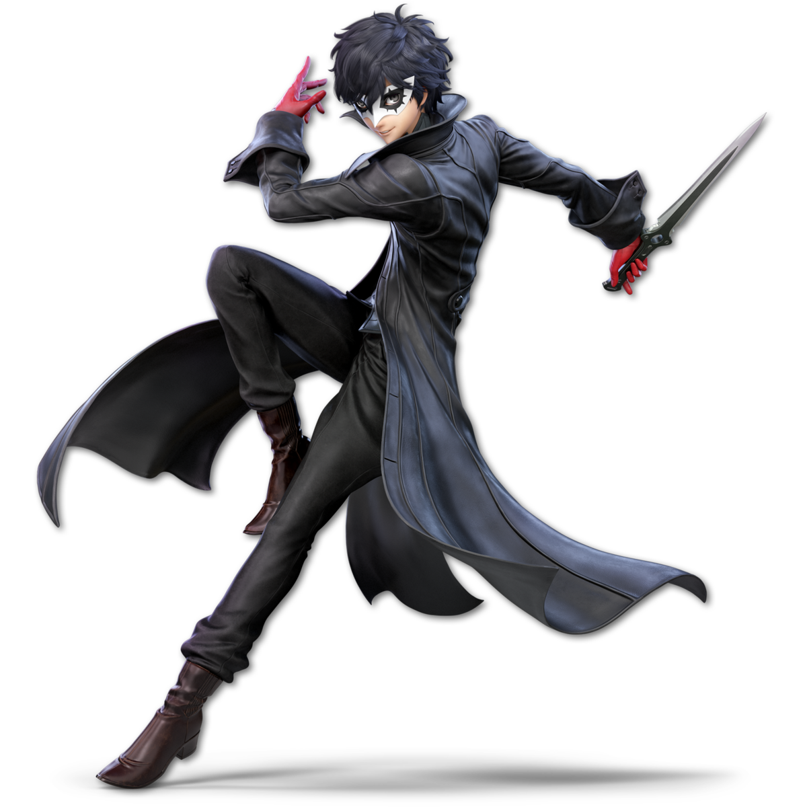

Offensive |

Defensive |

Flexible |
|---|---|---|
| There are 3 main playstyles in this game and certain characters are better for playing certain styles than others. So here's a rundown on the 3 styles and a good character to start with. | Offensive: This play style is mainly focused on constant pressure put onto the enemy typically by any means necessary. The best way to do this is by using the characters tools to keep the enemy in close proximty so that you can rack up damage quickly. Mario is a good character to start offensively with. His ability to use fire to pressure his opponents from far away and use of quick attacks to close punish those near him. | Defensive: Players that want do minimize risk on their part while still being able to take advantage of punishing oppertunities when they present themselves will want to try playing this style. Link represents this style since he can zone opponents with projectiles, which lowers the risk of himself getting hurt, and forces the enemy to dodge the attacks. This then allows for Link to do a punsih on those who carelessly dodge in near him since they's likely have little time to react. | Flexible: This playstyle is unique in that it almost specifically applies to certain characters. Some characters have bars that build up over time, for instance, which once filled up may allow the character to be better played in a different way. Joker is one of these characters since, when his bar isn't filled up, he is better played defensively. This is where he should bait players to hitting him when his counter active in order to charge up his bar. Once his bar is full, then Joker becomes much stronger for a little bit of time, which the player should then take a more offensive approach to fighting since it's a good oppertunity to get in a lot of damage and even down the opponent. |